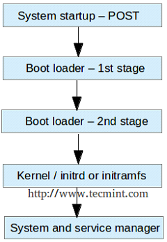
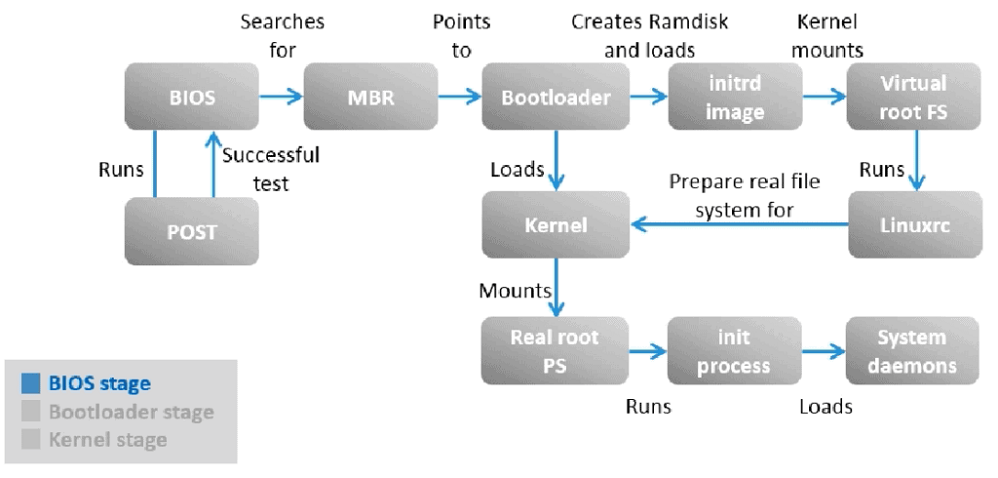
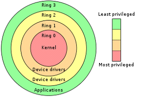
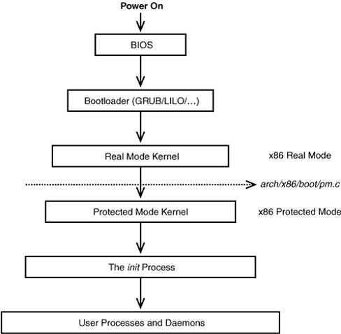
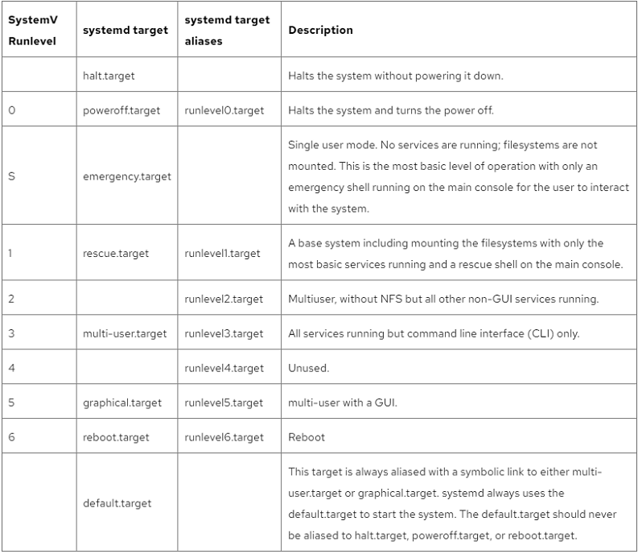
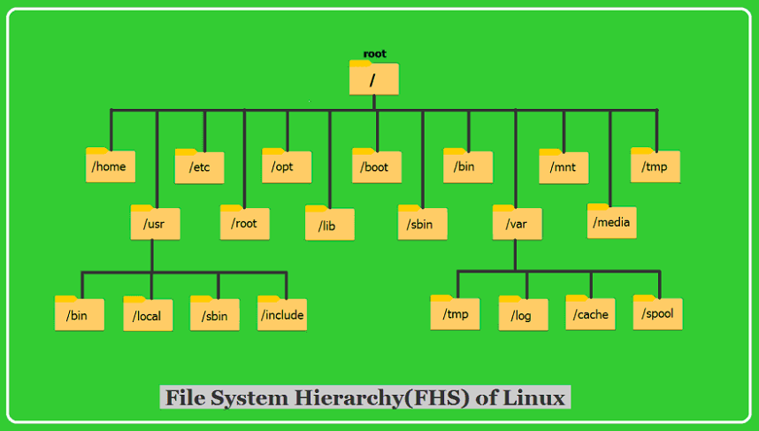

OS Linux - Struktura OS, Shell: koncepce, typy, příkazy. Správa programového vybavení. Start systému. Služby, naplánované procesy. Souborový sytém, Účel základních adresářů.
je název textového uživatelského rozhraní, které je předchůdcem grafického uživatelského rozhraní. Shell je spuštěn po přihlášení uživatele do systému, vytvoří příkazový řádek, pomocí kterého uživatel může počítač ovládat a jeho ukončením je uživatel ze systému odhlášen. Shell vytváří prostředí příkazového řádku, do kterého uživatel zadává názvy příkazů, které chce spustit. Shell tyto příkazy interpretuje, spouští odpovídající programy a umožňuje sledovat jejich výstup. Umožňuje příkazům předávat parametry, seskupovat je, slučovat příkazy do skriptů a podobně. Shell představuje „skořápku“, která skrývá uživateli detaily ovládání jádra (kernelu) operačního systému. Mnoho uživatelů unixových systémů dosud považuje moderní příkazový řádek shellu za mnohem pohodlnější způsob ovládání počítače než grafické uživatelské rozhraní.
Příkazy se volají tak, že se napíše jméno příkazu a za něj parametry. Parametry se obvykle dělí na tři druhy:
kratke jednoznakove volby, uvozene pomlckou. Je mozne je spojovat: ls -lisa je volani prikazu ls s volbami l,i,s,a
dlouhe volby uvozene dvema pomlckami. Napriklad ls -all nebo s parametrem volby ls --format=single-columns. Specialni parametr -- obvykle znamena konec voleb, tedy ze dalsi parametr neni volba i kdyz zacina pomlckou.
"obycejne" (neuvozene) parametry, obvykle jmena souboru.
Nejdulezitejsimi shelly jsou:
Bourne shell (sh)
Bourne-again shell(bash)
C shell (csh)
Korn shell (ksh)
Tenex C shell (tchs)
Graficka uzivatelska rozhrani pro Unix, napriklad GNOME a KDE, jsou obcas nazyvana vizualni shell nebo graficky shell.
Sprava programoveho vybaveni
balickovaci system
jsou dva zasadni, dpkg (pouziva debian, ubuntu) a rpm(redhat) lisi se v databazich
nad nema existuji nadstavby apt novejsi nez apt-get spravuje repozitare souboru a stahuje to i bez toho abychom dany balicek hledali odvede za nas prace ovsem pod poklickou stale vola dpkg ktery se stara o instalaci
Start systemu

probehne Power On Self Test ktery zjistuje jestli jsou komponenty v pocitaci v poradku pokud je vse takjak ma byt pokracuje se dal
Pocitac se startuje v real mode kde ma pristup k 1MB address memory. Neposkytuje memory protection, multitasking nebo privilegia programu. Jedna se o 16 bitovy rezim
Nejdrive se nacte Master Boot Record (velikost 512 bajtu) jeho hlavnim ukolem je odkazat na bootloader ktery by v aktualni rezimu nebyl videt, ten ma za ukol zavest do pameti a spustit ho s az 128 kde jsou vyhrazene 4 (124). zalozni kopii tabulky uklada na konci disku.
Opustili zpusob psani na cylindry a presli na blokove adresovani., Preslo se na UEFI na disku je specialni oddil ktery je naformatovany jako FAT32 obsahuje strukturu adresaru kde je zavadec
MBR nacte a spusti v dnesni dobe nejvice pouzivany GRUB2 bootloader (GRUB 1 spousti GRUB 1.5 ktery spousti GRUB2). Ten nacita filesystem z /boot adresare (FAT, NTFS). Ma take za ukol nacist kernel do pameti a predat mu kontrolu nad pocitacem. Ten bezi v real modu nasledne prepne do protected modu a pak znovu do real modu kvuli tomu aby mohl spusti kernel.
S prichodem kernel se taky pocitac prepina do protected mode. 32 bitovy rezim. Dovoluje pouzivat virtualni pamet, paging (zpusob zpravy virtualni pameti, kde jednotka MMU prevadi logicke adresy na fyzicke), bezpecny multitasking. Udrzuje si zpetnou kompatibilitu s programem z real modu. Pracuje s priviligama. Ochrana pameti prideluje procesu urcitou cast programu tim zamezuje aby si mohly procesy zasahovat mimo vymezeny prostor. Procesy se mohou navzajem ovlivnovat.

Ve chvili jak je nacte kernel spousti init nebo system process ktery je prvni process a stara se o spoustei dalsich procesu. Ten znovu od kernel prebira kontrolu. Jadro spousti /sbin/init kde on init nebo systemd se stara o ostatni.

Pokud kernel bezi v 64bitovem rezimu, musi se jeste prepnout z protected modu do long modu ktery prave 64bitovy rezim podporuji. Systemd s prioritou 1 mountuje filesystem, ma take pristup k /etc adresari kde jsou konfiguracni soubory napriklad i system. Kde zjisti v jakem runlevelu ma prihlasit napriklad usera (5 desktop user graphic interface, 3 multi user server most likely set). Systemd spousti kazdy proces v jednom z ruznych rezimu podle toho jak velke maji opravneni.

Souborovy system

/ nebo /root... jedna se o root user home slozku ktera je oddelena od ostatnich useru
/lib, /lib32, /lib64, /ibx32... zakladni sdielene knihovny ktere jsou spustitelne z /bin nebo /sbin
/usr (user system resources) ... obsahuje user binaries, jejich dokumentace knihovny. Velka cast dat je ulozena prave zde. Je pro "user usable programs and data" /user/bin obsahuje plne vsechny komandy na rozdil od /bin ktere jich obsahuji mene
/etc (et cetera) misto kde se ukladaji konfiguracni soubory
/dev (device) misto kde se vyskytuji slozky jako webkamera, klavesnice, hard disk. Sem maji pristup DRVIERY ne user
/var (variable) obsahuje slozky do kterych system zapisuje data behem behu jeho operaci.
/var/log obsahuje log soubory
/var/cache obsahuje cached data z aplikacnich programu
/tmp (temporary) docasne zdroje potrebne pro nejake procesy ktere je potrebuji pouze docasne
/media (removable media) obsahuji podadresare kde jsou removable media vlozeny a mounted. Napriklad pokud vlozim CD adresar se automaticky vytvori a muzete nasledne pristoupit k obsahu z CD